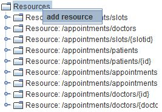
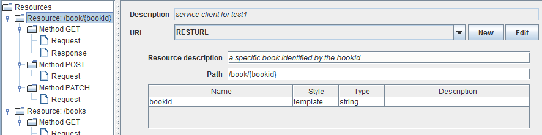

Resource

Topic content
Creation
In order to support external REST web service calls with different URL values inside URLPatterns for different REST messages, Resource object is introduced. This object contains a set of different REST methods for a specific URL-Pattern. You can define as many Resource elements in order to be able to execute different API calls of the desired REST web service.
In order to create a new Resource object several steps need to be followed.
1.Double click on your REST service client in the Designer scenario tree to open the configuration panel.
2.In the left side of opened configuration panel, Right-click on the element.
3.Click on the option in order to create new resource.

Configuration
1.Double click on your REST service client in the Designer scenario tree to open the configuration panel.
2.Click on the previously created element.
3.The configuration panel for the selected element will be shown.

Figure – REST Service Client - Resource Configuration
In addition to previously configured values of the parent element Resources. Here you can find the following configuration settings.
•Resource description - description of the Resource.
•Path - the value of the request URL. the value of the request URL. Here you can also define parameters of your web service request using curly brackets inside path value. Actually Orchestra uses the standard URI Template (RFC6570) to describe the embedded variables.
If for example you enter a Path like /book/{bookid} then in the parameter table automatically a template parameter with the given name appears. Note that you cannot add Resource parameters in the table, you always have to enter it in the URI template. A resource might be identified by query parameters also, so for example the path could also look like /book/{?bookid} to denote a query parameter.
|
After setting up Resource element you will need to add method objects in order to configure actual REST request method calls. |